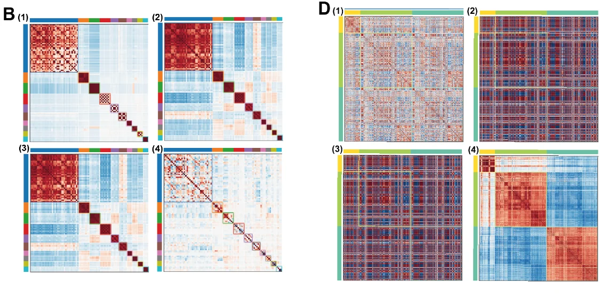
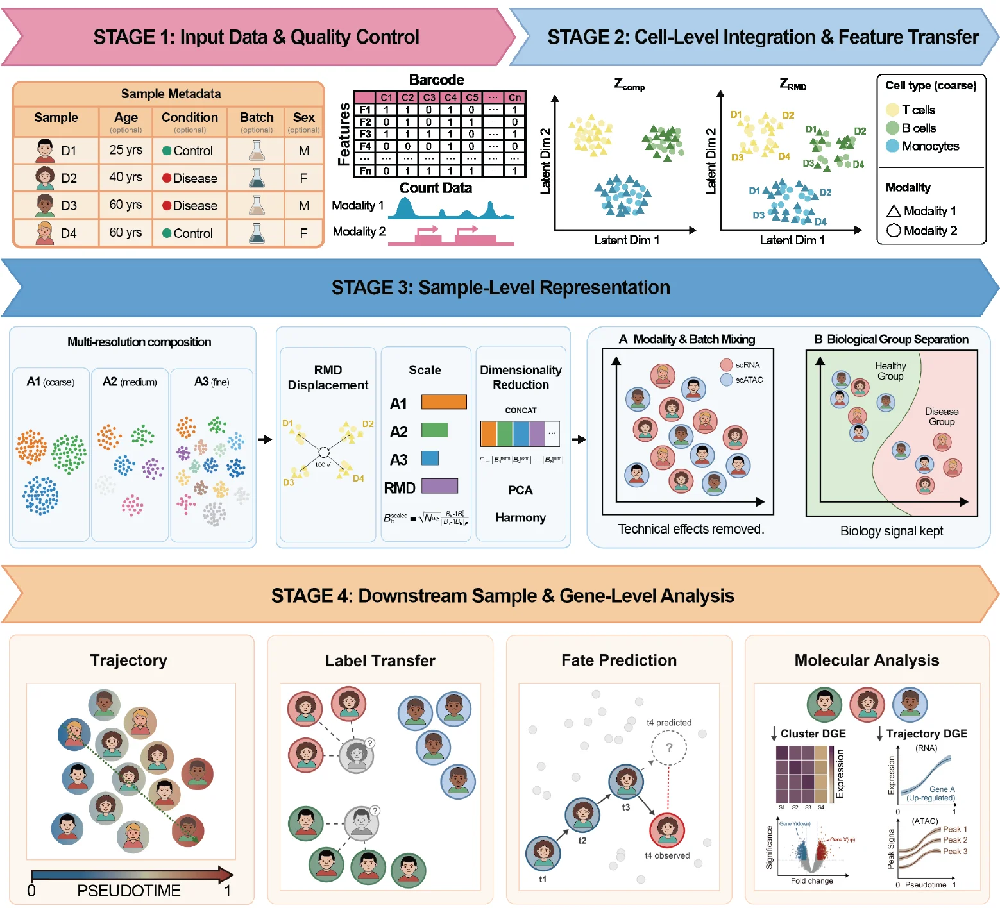
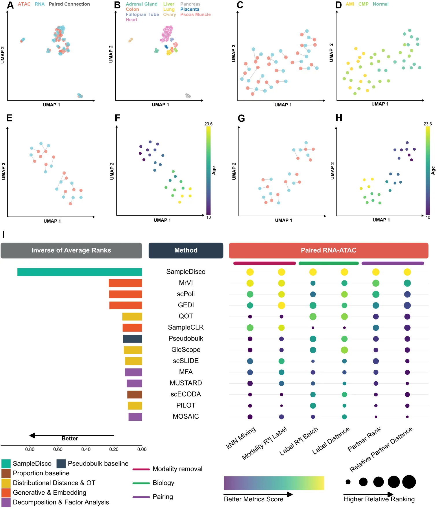
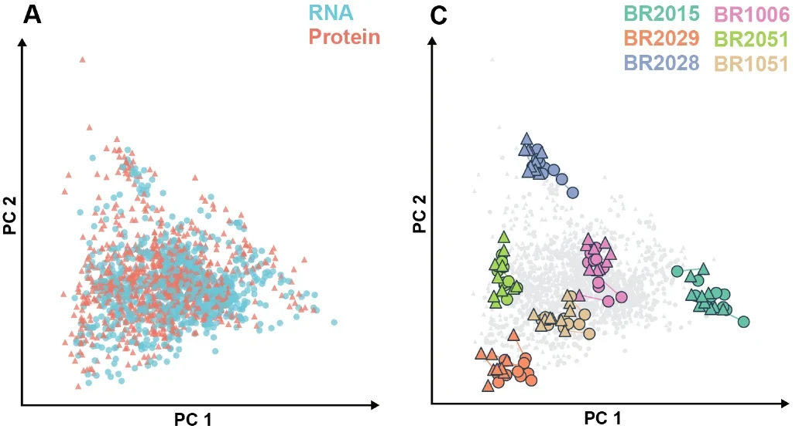
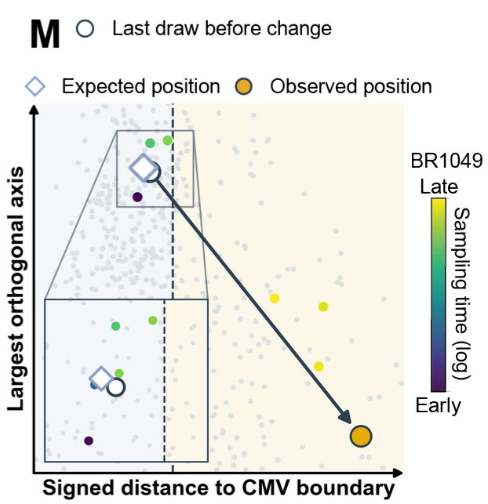

SampleDisco
Harmonizing Single-Cell Data Across Studies and Modalities to Reveal Sample Heterogeneity
Single-cell studies increasingly include many samples, creating new opportunities to investigate sample-level heterogeneity, including disease subtypes and cellular programs associated with disease progression. Yet these analyses add complexity to conventional cell-level analyses. Accurately measuring sample similarity is essential, but challenging when phenotypes are unknown or only partially known, samples come from different studies with batch effects, or assays generate distinct modalities (e.g., transcriptomic and epigenomic data). We present SampleDisco, an integrated method for harmonizing samples across modalities and studies in a shared embedding, either unsupervised or using partial phenotype information. SampleDisco represents each sample through multiresolution cellular composition and reference-relative mean displacement, enabling joint embedding without paired measurements. In benchmarks, it substantially improves embedding accuracy, preserving biological variation associated with tissue, disease, development, and age while reducing technical differences across modalities and cohorts. Applications demonstrate SampleDisco’s broad utility in identifying major sources of variation, sample subtypes, and disease trajectories; characterizing multimodal cellular programs; and transferring sample labels across cohorts and modalities. In a longitudinal RNA–protein cohort, SampleDisco detects cytomegalovirus (CMV) infection and seroconversion. In integrated COVID-19 cohorts, it reconstructs disease-progression trajectories, reveals CMV-associated patient heterogeneity, and infers gene-regulatory programs from unpaired ATAC and RNA data.
The problem
Many questions in single-cell biology are about samples, not cells: which patients resemble each other, how a disease progresses, what changes in a person over time. Studies increasingly include hundreds of samples, each with thousands of cells, so answering these questions needs a sample map (a sample embedding): one point per sample, placed so that biologically similar samples sit close together.
Building that map is hard because technical differences can outweigh biology. Samples come from different studies and labs, and increasingly from different assays: one cohort profiled by scRNA-seq (gene expression), another by scATAC-seq (which measures open chromatin), with no person measured both ways. Existing sample-level methods were designed for a single assay or for paired data, and a previous benchmark found that simple baselines, such as cell-type proportions or each sample's average expression, often matched or beat more complex methods.
The key idea: two views of every sample
SampleDisco describes each sample in two complementary ways, because samples can differ in two ways. Composition records which cell states a sample contains and in what proportions, for example more monocytes and fewer T cells. Displacement records how the sample's cells are shifted within each cell type: the same cell types can be present in similar numbers yet sit in a different state, for instance after a stimulus.
The two views capture different biology. In ENCODE data spanning ten human tissues, which are largely defined by the cells they contain, the composition view separated tissues sharply and the displacement view less clearly. In scBloodNL, blood cells were left untreated or stimulated with pathogens for 3 or 24 hours; stimulation changes the state of cells more than which cells are present, and here the displacement view, not composition, sorted the samples by time.

Keeping the two views as separate, weighted parts lets SampleDisco tell apart samples that differ in makeup from samples with similar makeup but shifted cell states, instead of committing in advance to one definition of similarity.
How it works
SampleDisco builds on existing tools, such as scGLUE (RNA and chromatin) and MaxFuse (RNA and protein), that place individual cells from different assays in one shared space, and turns that cell map into a sample map. Each sample's cells are summarized as composition at three levels of detail, from broad cell types to fine cell states, plus displacement for each broad cell type.
What makes assays comparable is where displacement is measured from. Each sample is compared with a reference built from the other samples of the same assay or study, so an offset shared by a whole assay or batch cancels out, while differences between individual samples remain. The summaries are then weighted, combined, compressed and corrected for remaining batch effects, giving one point per sample.

If some sample labels are known, the balance between the two views can optionally be tuned to them. The map then feeds downstream tools: sample clustering, disease trajectories, label transfer between cohorts, predicting where a donor's next sample should fall, and gene- and regulator-level analysis.
Benchmarks: first overall against 13 other methods
In every benchmark panel, SampleDisco ranked first overall among 14 sample-embedding methods. The other 13 included existing methods such as MrVI, scPoli and GEDI plus two simple baselines (cell-type proportions and pseudobulk averages), and each map was scored on removing assay or batch differences and on preserving biology such as tissue, disease, development or age.
The most direct test used four datasets in which RNA and chromatin were measured on the same specimens, with the pairing hidden. Other methods tended to trade one goal for the other: the runner-up at mixing assays (MrVI) ranked seventh on biology, while the second- and third-best on biology (QOT and GloScope) ranked twelfth and eleventh at mixing assays. SampleDisco was the only method in the top three of every category, ranked first in each, and was first on all four datasets.

It also ranked first overall on unpaired RNA–chromatin data (COVID-19 and a lifespan immune atlas) and in the combined single-assay panel, though not on every dataset: a pseudobulk average led on preserving biology in COVID-19 RNA data, and the proportion baseline edged ahead on one healthy-aging cohort.
What a shared map makes possible
Because samples from different assays share one map, analyses that would otherwise need paired data become possible. The Sound Life cohort followed healthy younger and older adults for about two years, profiling each blood draw by scRNA-seq and, in separate cells, by spectral flow cytometry, which measures protein markers. SampleDisco was not told which RNA and protein samples belonged together, yet repeated draws from the same donor remained close across assays and visits: for 58.3% of RNA samples, a protein sample from the same donor was among the five nearest, against 5.4% expected by chance.

The map also carried traits across assays and over time. A classifier trained only on RNA samples predicted cytomegalovirus (CMV) status and age group from protein samples nearly as accurately as within RNA. A model of each donor's expected path, learned from the other donors, found the largest departure along the CMV direction in one participant, who moved toward the CMV-positive side from day 381; the source study had documented this participant's CMV seroconversion, with a first positive test at about day 380.

In COVID-19, the shared map linked chromatin to gene expression without paired cells. RNA samples from 11 studies and ATAC samples from a separate study were ordered along one severity axis, the direction in the map that best tracks recorded severity. Along it, monocytes showed a coordinated program: for 16 transcription-factor (TF) motifs, the TF's own mRNA, the accessibility of DNA sites carrying its motif and its target genes' expression all rose together, and none of 1,000 shuffled orderings produced even one such motif. The best-supported regulators included JDP2, FOSL2, MAF, MAFG, BACH1 and RUNX1, a pattern resembling a severity-enriched monocyte subset described in an earlier COVID-19 study.
Why it matters
SampleDisco treats comparing samples as a problem in its own right and makes it possible across assays that were never run on the same people. Because it builds on any cell-level integration, better cell alignment should carry over to better sample maps, and further assays or extra descriptions of a sample, such as spatial neighborhoods, could enter as new parts of the same representation.
The study also notes limits: errors in the upstream cell alignment carry through to the sample map, no method was best on every metric or cohort, and the regulatory programs are candidates rather than established mechanisms. The method is released as the sampledisco Python package.